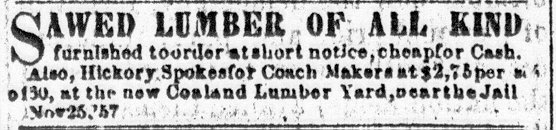

Though columns 1 or 2 could carry stories or poetry like those appearing on page 2, page
3 usually comprised advertisements. Unlike the Spectator, however, which divided
its ad space broadly by location of the advertiser (local, Richmond, Baltimore, other),
the Valley Spirit separated advertisers by the type of product or service they
offered. On February 1, 1860, for example, the Valley Spirit divided its ad space
into six separate categories. These categories, while
incorporating most ads on a page, did not fit them all, 
and, especially toward the foot of a column, miscellaneous ads appear.
For example, in column 3 of the February 1 issue, eight inserts for hotels follow the
heading for "Hotels," but the column also carried ads for a house painter, a furniture
manufacturer, a lumberyard, and a pharmacy, among others.